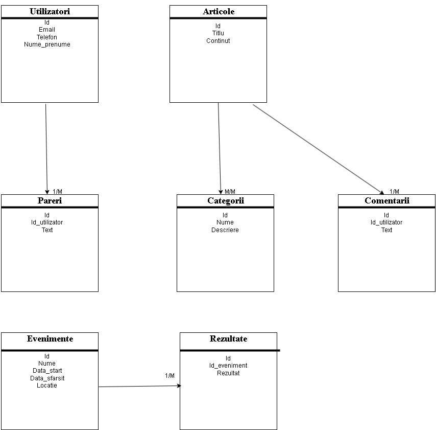

Despre Aplicație
Platforma noastră sportivă include următoarele entități și relații cheie:
- Utilizatori: [id (PK), email, telefon, nume_prenume]. Utilizatorii se înregistrează și interacționează cu site-ul.
- Păreri: [id (PK), id_utilizator (FK), text]. Păreri postate de utilizatori, legate de tabelul Utilizatori.
- Articole: [id (PK), titlu, continut]. Conținut editorial și știri sportive.
- Categorii: [id (PK), nume, descriere]. Clasifică articolele în diferite categorii sportive.
- Comentarii: [id (PK), id_utilizator (FK), text]. Comentarii la articole, legate de Utilizatori și Articole.
- Rezultate: [id (PK), id_eveniment (FK), rezultat]. Scoruri și rezultate sportive, asociate cu Evenimente.
- Evenimente: [id (PK), nume, data_start, data_sfarsit, locatie]. Evenimente și competiții sportive.
Aceste tabele formează baza de date a aplicației, cu relații definite prin chei primare (PK) și secundare (FK) pentru a menține integritatea și coerența datelor.
Diagrama
Aici va fi plasată diagrama conceptuală a bazei de date, ilustrând structura și relațiile dintre datele aplicației.